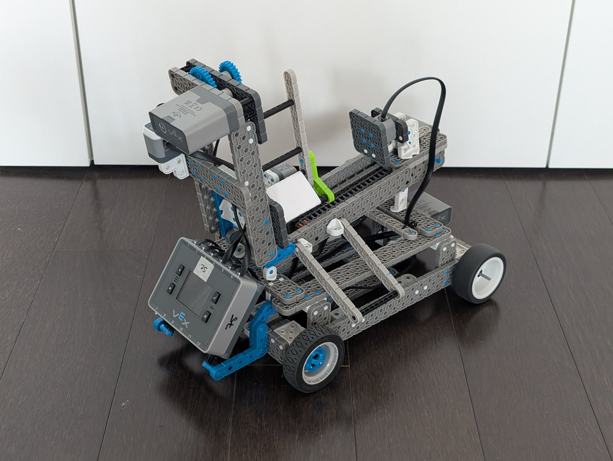
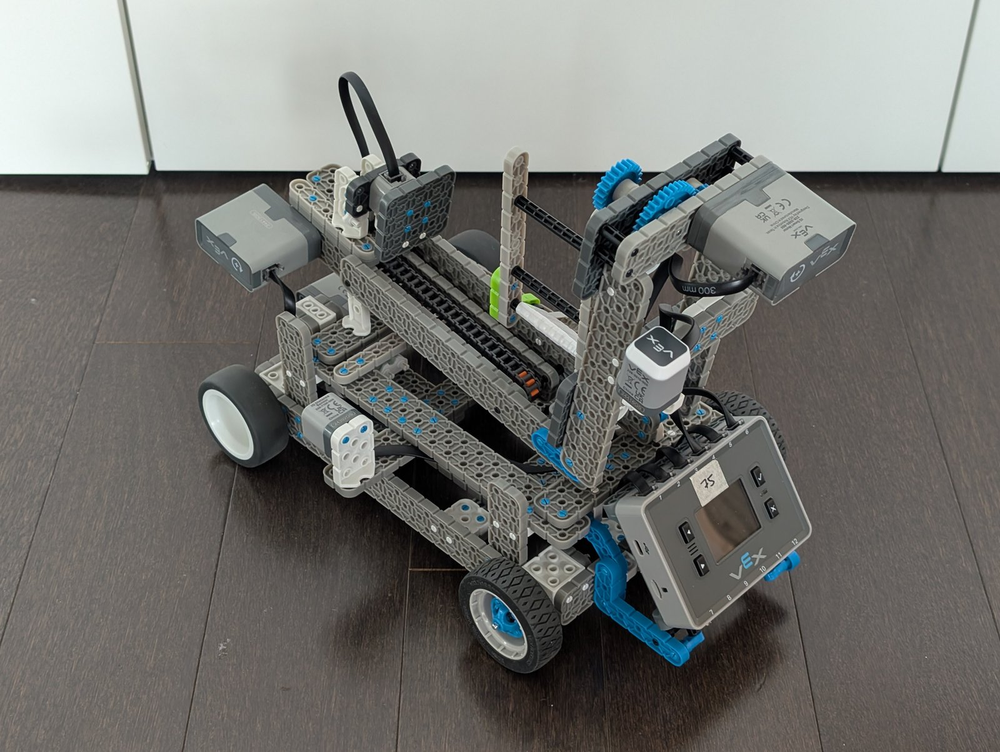
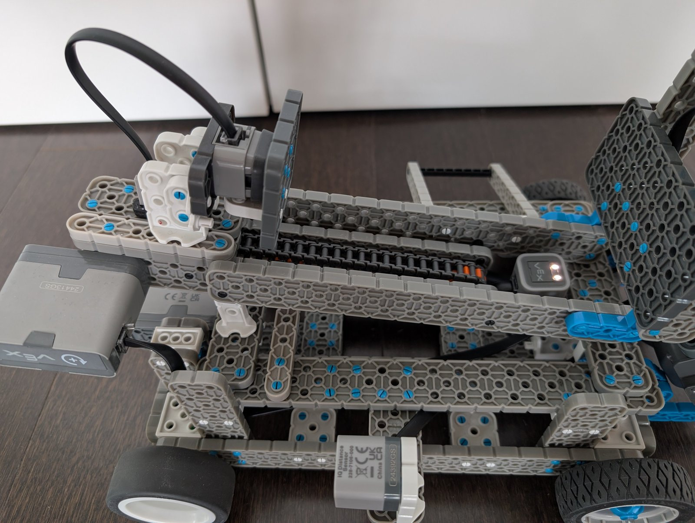

Autonomous Sorting Robot
A VEX IQ robot that tries to sort mixed objects by size and colour on its own. It handles startup, sensing, navigation, sorting, and shutdown, all written in C++.
Overview
This was a course project built on the VEX IQ platform. The goal was to put together a robot that could run a full autonomous routine on its own, so it powers on, looks around, drives toward objects, makes a guess about what each one is, and drops it into the right bin before shutting down. The workflow is written in C++ on VEXcode IQ, and I tried to build the mechanical side around what the sensors could actually see.
What I worked on
- Wrote the full workflow in C++, which helped reduce classification errors and made runs feel more consistent during testing.
- Hooked up bumper, optical, distance, and Touch LED sensors so the robot could tell objects apart by size and colour in mixed scenarios.
- Designed a chain-driven sizing mechanism, a custom shaft coupler, and a sorting arm with enough torque to move things reliably.
Technical
- C++
- VEXcode IQ
- Sensor fusion
- State machines
- Mechanism design
- Chain drives
- Torque calculation
- Autonomous control
- Debugging
Skills
- Problem-solving
- Iterative testing
- Attention to detail
- Self-directed learning


